This is a post I wrote back in late October and THOUGHT I had published, but just found it in my DRAFTS folder. Better late than never.
When our daughter Sara became seriously ill in early 2022, we made a bee-line trip back to Ohio from Arizona to help her through the recovery process.
It’s now summer and Sara is doing so much better. She’s the best and happiest we’ve seen her in 20 years.
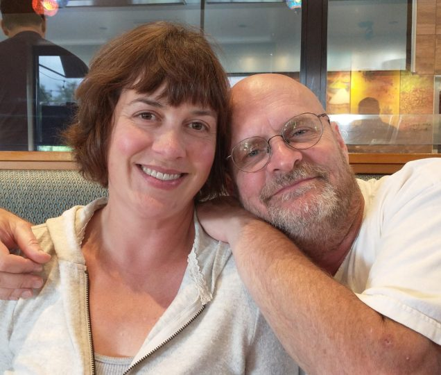
Since Stu and Sara sold their Mt Gilead home in April, we’ve all been living together in one of our small two bedroom rental homes in the village. It’s “cozy” but it’s got a great attached garage for the guys to play in and a fenced yard for the dogs w/a concrete patio so the girls can sun themselves while keeping an eye on the little 4 legged mischief makers.
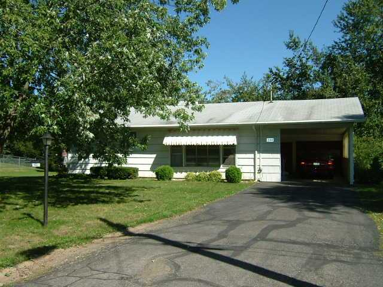
As our lives got more and more back to normal, we yearned for more “normal” activities. One of these was Stu’s desire to go fishing in northern Michigan again as he had the year before.
Sara wanted to go along, but the idea of being out on the lake all day really wasn’t her idea of fun – nor was waiting in the motel room all day for Stu to come back with the car towing the boat. Quite the conundrum.
Kathy and I proposed the idea of us tagging along and setting up camp in a local campground that could also provide a rental camper for the two of them and the dogs. We found a great little campground called Campers Cove RV Park & Canoe Livery where we got sites just a few hundred feet apart. As an added bonus Stu’s mom Barb came along as well!
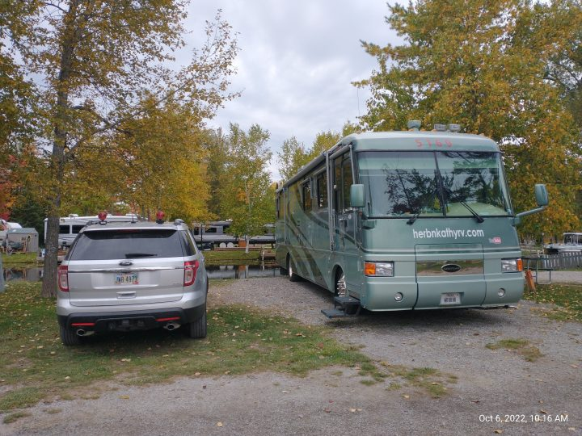
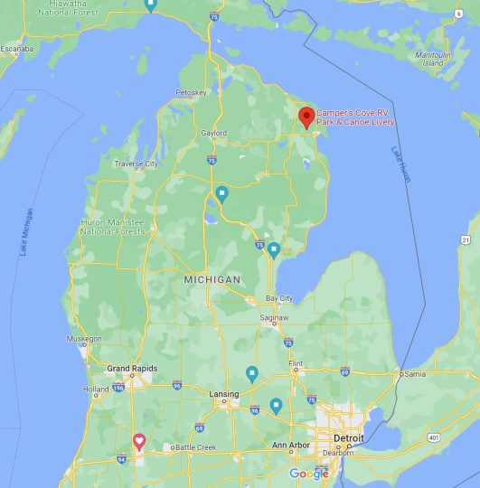
We set our camping trip for October and when I mentioned that to a Facebook friend, another one of our “old friends” (not THAT kind of “old” really but friends we’ve been since the early 70’s) suggested they might come along since we hadn’t seen each other in a few years. Great idea!
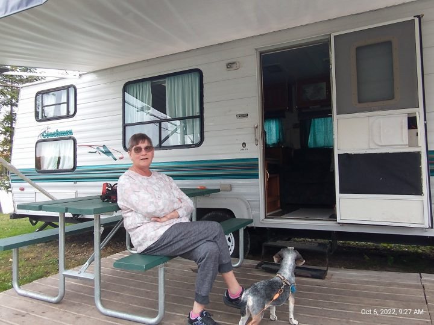
What a great time we had camping in northern Michigan enjoying the fall colors, the cool weather, the nearly empty campground, the crackling of the campfire every day and night, along with great food provided and cooked by our friends Norm and Alice. What a treat!
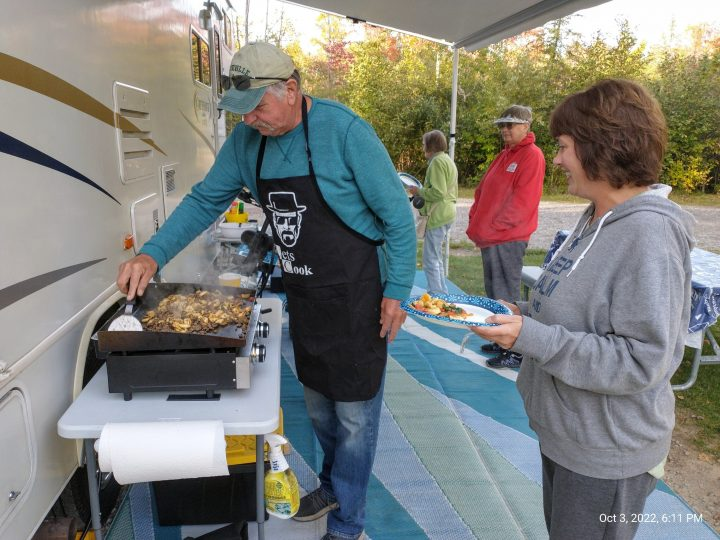
Our relationship with Norm & Alice started when Norm and I hired in at Xerox as copier service reps in 1973 (I think). We soon became fast friends as we both worked covering the downtown Detroit big office buildings servicing copiers in law firms, government offices, stock brokerages, banks, and others. Back in those days it was only Xerox, Kodak, and IBM in the copier business. It would be a few more years before the influx of the Toshibas, Minoltas, Canons and other Japanese brands into the market.
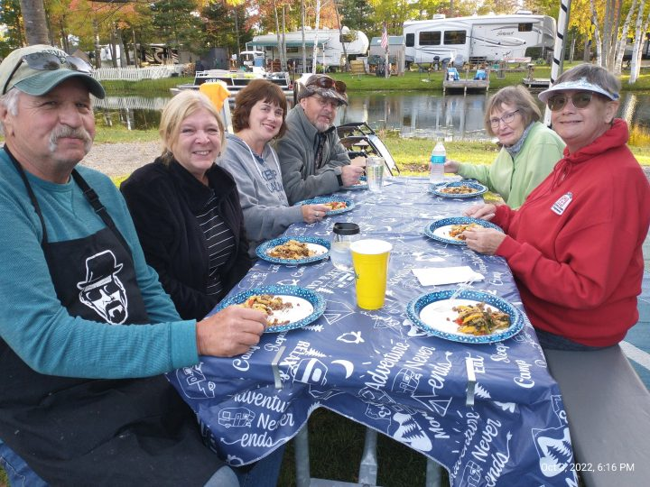
As our friendship grew, the four of us partied together, got married about the same time, went on some trips together, each brought our children into the world (each with a boy and a girl) about the same time. We bought our first homes the same year. They, however have done the smart thing and stayed in that home for nearly 50 years while we’ve moved in and out of nine homes before finally selling the last one and hitting the road in our motorhome in 2016.
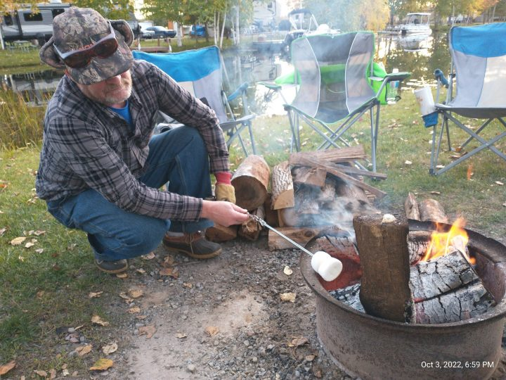
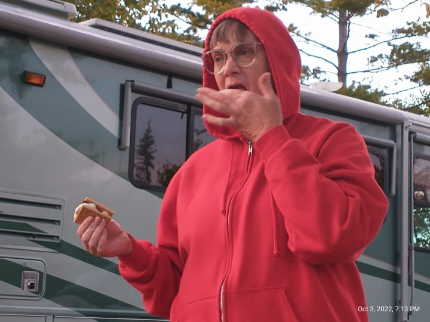
We didn’t just sit around the campfire and feed our faces for three days however. While Stu went off fishing, we made a couple day trips to see the Mackinac Bridge and visit a couple lighthouses too.
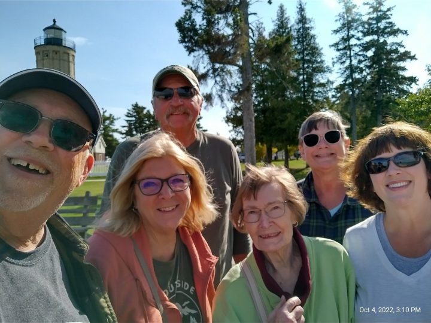
Kathy and I are going to be volunteering late summer of ’23 as guest lighthouse keepers at 40 Mile Point Light near Rogers City, MI. Since we were pretty darn close, we decided to swing on by and scope out the place!
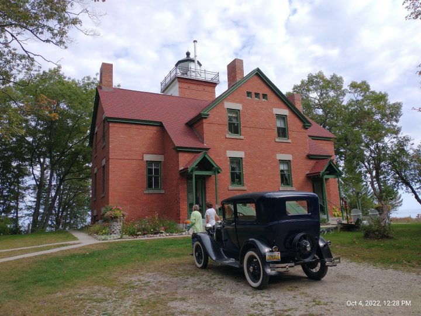
We couldn’t have asked for better weather. The sunny warm days faded to cooler afternoons and evenings. Time together with wonderful old friends and our family really was a special time telling stories of times past and just enjoying each other’s company.
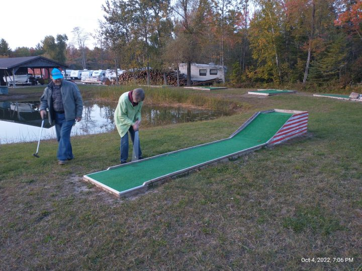
As we prepare to stay in Mt Gilead for the winter so that I can get my second hip replacement, we reminisce about our six years on the road workamping and camp hosting.
We’re so glad that we made the decision to quit working early (at 62), sell the house and hit the road. The places we’ve gone and especially the wonderful lasting friendships we’ve made along the way would never have happened if we stayed home – working or retired.
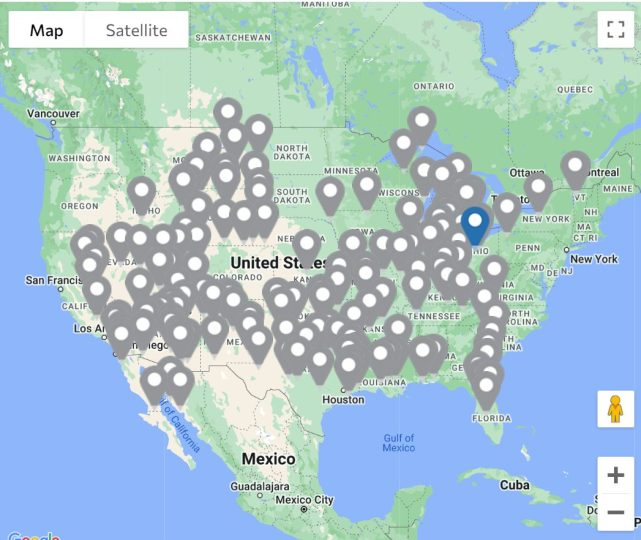
But for now we will be content to stay in Ohio to get some medical issues taken care of, spend the summer of ’23 in/near here and then head to Arizona and spend next winter with our “other” family there.


{kind=link}
{kind=link}
{kind=link}
{kind=link}
{kind=link}
{kind=link}
{kind=link}
{kind=link}
{kind=link}
{kind=link}
{kind=link}
{kind=link}